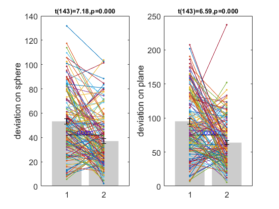
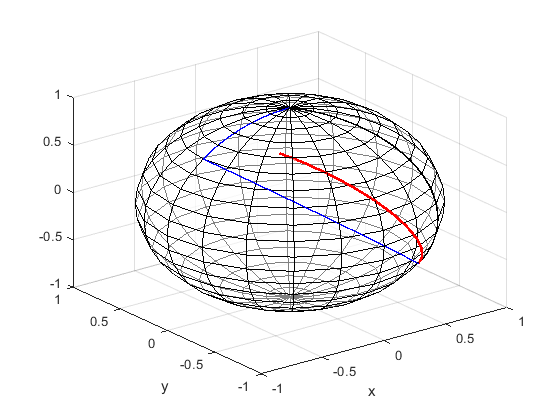

Contents
- create interactive webpage of 3D trajectories
- Load behaviour data txt files
- preprocessing inbound turn angle so that it ranges between [-180,180]
- preprocess inbound distance because of a rare case where a wrong distance was logeged
- sort the trials by same shape and collapse left/right symmetry
- calculate the ideal turn angle and distance
- calculate distance error relative to spherical and planar solution
- to be deleted (something is wrong with this participant. saved azi,pit of the returned is completely different from coordinates reconstructed from turn angle and distance
create interactive webpage of 3D trajectories
for presentation purpose 2021.12.30 MK
close all; clear; clc; [basesph_x,basesph_y,basesph_z]=sphere(20); %prepare a base sphere
Load behaviour data txt files
rootdir='../behData'; subId_list={'psub00','psub01','psub02','psub03','psub04','psub05'};% change in triangle shape from previous subject rawdata_sph=[]; rawdata_plane=[]; for sub=1:length(subId_list) subId=subId_list{sub}; behdir=[rootdir,filesep,subId,filesep,'sphere']; fn=dir(sprintf('%s/*triangleTestSum*',behdir)); for run=1:length(fn) tmpdata=readtable([behdir,filesep,fn(run).name],'filetype','text'); tmpdata.sub=sub*ones(size(tmpdata,1),1); tmpdata.run=run*ones(size(tmpdata,1),1); rawdata_sph=[rawdata_sph;tmpdata]; end behdir=[rootdir,filesep,subId,filesep,'plane']; fn=dir(sprintf('%s/*trianglePlaneTestSum*',behdir)); for run=1:length(fn) tmpdata=readtable([behdir,filesep,fn(run).name],'filetype','text'); tmpdata.sub=sub*ones(size(tmpdata,1),1); tmpdata.run=run*ones(size(tmpdata,1),1); rawdata_plane=[rawdata_plane;tmpdata]; end end
preprocessing inbound turn angle so that it ranges between [-180,180]
inbound turn angle saved from Unity is between -360 to 360deg, to make it easier to analyse, I calculated the angle as between -180 and 180deg
rawdata_sph.inboundTurnInDeg(rawdata_sph.inboundTurnInDeg>180)=rawdata_sph.inboundTurnInDeg(rawdata_sph.inboundTurnInDeg>180)-360; rawdata_sph.inboundTurnInDeg(rawdata_sph.inboundTurnInDeg<-180)=rawdata_sph.inboundTurnInDeg(rawdata_sph.inboundTurnInDeg<-180)+360; rawdata_plane.inboundTurnInDeg(rawdata_plane.inboundTurnInDeg>180)=rawdata_plane.inboundTurnInDeg(rawdata_plane.inboundTurnInDeg>180)-360; rawdata_plane.inboundTurnInDeg(rawdata_plane.inboundTurnInDeg<-180)=rawdata_plane.inboundTurnInDeg(rawdata_plane.inboundTurnInDeg<-180)+360; % also calculate the absolute distance error from the origin rawdata_plane.absErrorInDeg=sqrt((rawdata_plane.returned_XInDeg).^2+(rawdata_plane.returned_YInDeg).^2); returned_cart=sph2cartMKunity(rawdata_sph.returned_aziInDeg,rawdata_sph.returned_pitInDeg); start_cart=sph2cartMKunity(rawdata_sph.pos1_aziInDeg,rawdata_sph.pos1_pitInDeg); for i=1:length(returned_cart) arclen(i,1)=acosd(dot(returned_cart(i,:),start_cart(i,:))); end rawdata_sph.absErrorInDeg=arclen;
preprocess inbound distance because of a rare case where a wrong distance was logeged
normally, saved end position (returned_aziInDeg,returned_pitInDeg) should match with the estimated end position by adding 3 legs (using dist1InDeg,dist2InDeg, turnangInDeg, inboundDistInDeg, inboundTurnInDeg) however,in the early version of Unity script (psub00-psub05), I computed the inboundDistInDeg by geodesic distance between the two locations so when a participant move >180deg, the distance is saved as 360-X (e.g. dist of 240deg becomes 120deg) which caused a large discrepancy between the end position and reconstructed position I can fix the inboundDistInDistance for such cases
distBtwDeadreckonActual=zeros(size(rawdata_sph,1),1);%discrepancy between the saved end position, and the position calculated by adding up 3 legs for trial=1:size(rawdata_sph,1) tmpstate1=[0,0,0]; %azi,pit,theta in radian for starting position tmpstate2=translateOnSphere(0,0,0,rawdata_sph.dist1InDeg(trial)*pi/180); % end of first leg tmpstate3=translateOnSphere(tmpstate2(1),tmpstate2(2),tmpstate2(3)+rawdata_sph.turnangInDeg(trial)*pi/180,rawdata_sph.dist2InDeg(trial)*pi/180); % end of second leg tmpstate4=translateOnSphere(tmpstate3(1),tmpstate3(2),tmpstate3(3)+rawdata_sph.inboundTurnInDeg(trial)*pi/180,rawdata_sph.inboundDistInDeg(trial)*pi/180); % end of inbound leg response_cart=sph2cartFn(tmpstate4(1),tmpstate4(2)); distBtwDeadreckonActual(trial,1)=acosd(dot(response_cart,sph2cartMKunity(rawdata_sph.returned_aziInDeg(trial),rawdata_sph.returned_pitInDeg(trial)))); end over180degTrial=distBtwDeadreckonActual>50; rawdata_sph.inboundDistInDeg(over180degTrial)=360-rawdata_sph.inboundDistInDeg(over180degTrial);
sort the trials by same shape and collapse left/right symmetry
first find unique triangle shape
triangleShape=unique([rawdata_sph.dist1InDeg,rawdata_sph.dist2InDeg,rawdata_sph.turnangInDeg],'rows'); triangleShape=sortrows(triangleShape,3,'descend'); % triangleShape(1,:)=[67.5,135,120];%dist1, dist2, turnang % triangleShape(2,:)=[45,135,90];%dist1, dist2, ang3 % triangleShape(3,:)=[90,45,60];%on plan,e return angle=90deg large, dist is small, so I like to keep it to have a wide range of ideal planar homing vector (however, it is relatively small triangle, so sphere/plane dissociation is difficult) % triangleShape(4,:)=[135,67.5,60];%dist1, dist2, ang3 % triangleShape(5,:)=[135,45,120];%dist1, dist2, ang3 % triangleShape(6,:)=[135,90,90];%large triangle that can distinguish sph/plane, as well as good turning range for plane. % triangleShape(7,:)=[67.5,135,-120];%dist1, dist2, turnang % triangleShape(8,:)=[45,135,-90];%dist1, dist2, ang3 % triangleShape(9,:)=[90,45,-60];%on plan,e return angle=90deg large, dist is small, so I like to keep it to have a wide range of ideal planar homing vector (however, it is relatively small triangle, so sphere/plane dissociation is difficult) % triangleShape(10,:)=[135,67.5,-60];%dist1, dist2, ang3 % triangleShape(11,:)=[135,45,-120];%dist1, dist2, ang3 % triangleShape(12,:)=[135,90,-90];%large triangle that can distinguish sph/plane, as well as good turning range for plane. % collapse left/right symmetric shape? trial_leftturn=(rawdata_sph.turnangInDeg<0); rawdata_sph.pos3_aziInDeg(trial_leftturn)=-rawdata_sph.pos3_aziInDeg(trial_leftturn); rawdata_sph.returned_aziInDeg(trial_leftturn)=-rawdata_sph.returned_aziInDeg(trial_leftturn); rawdata_sph.inboundTurnInDeg(trial_leftturn)=-rawdata_sph.inboundTurnInDeg(trial_leftturn); rawdata_sph.turnangInDeg(trial_leftturn)=-rawdata_sph.turnangInDeg(trial_leftturn); trial_leftturn=(rawdata_plane.turnangInDeg<0); rawdata_plane.pos3_XInDeg(trial_leftturn)=-rawdata_plane.pos3_XInDeg(trial_leftturn); rawdata_plane.returned_XInDeg(trial_leftturn)=-rawdata_plane.returned_XInDeg(trial_leftturn); rawdata_plane.inboundTurnInDeg(trial_leftturn)=-rawdata_plane.inboundTurnInDeg(trial_leftturn); rawdata_plane.turnangInDeg(trial_leftturn)=-rawdata_plane.turnangInDeg(trial_leftturn); [~,shapeIdx_sph]=ismember([rawdata_sph.dist1InDeg,rawdata_sph.dist2InDeg,rawdata_sph.turnangInDeg],triangleShape,'rows'); [~,shapeIdx_plane]=ismember([rawdata_plane.dist1InDeg,rawdata_plane.dist2InDeg,rawdata_plane.turnangInDeg],triangleShape,'rows');
calculate the ideal turn angle and distance
leg1InDeg=[];leg2InDeg=[];turnInDeg=[];sph_inboundDistInDeg=[];sph_inboundTurnInDeg=[];plane_inboundDistInDeg=[];plane_inboundTurnInDeg=[]; for i=1:size(triangleShape,1); dist1=deg2rad(triangleShape(i,1)); dist2=deg2rad(triangleShape(i,2)); ang3=deg2rad(180-triangleShape(i,3)); % 1)spherical case: sin(b)sin(c)cos(A)=cos(a)-cos(c)cos(b) // cosine rule for side dist3_sph=acos(sin(dist1)*sin(dist2)*cos(ang3)+cos(dist1)*cos(dist2)); %arclength of inbound leg using the cosine rule ang1_sph=acos((cos(dist1)-cos(dist2)*cos(dist3_sph))/sin(dist2)/sin(dist3_sph)); ang2_sph=acos((cos(dist2)-cos(dist1)*cos(dist3_sph))/sin(dist1)/sin(dist3_sph)); %inboundturn_sph=pi-ang1_sph; % 2)planar case: c^2=a^2+b^2-2*a*b*cos(C); dist3_plane=sqrt(dist1^2+dist2^2-2*dist1*dist2*cos(ang3)); ang1_plane=acos((dist2^2+dist3_plane^2-dist1^2)/2/dist2/dist3_plane); ang2_plane=pi-ang1_plane-ang3; %inboundturn_plane=pi_ang1; leg1InDeg(i,1)=triangleShape(i,1); leg2InDeg(i,1)=triangleShape(i,2); turnInDeg(i,1)=triangleShape(i,3); sph_inboundDistInDeg(i,1)=rad2deg(dist3_sph); sph_inboundTurnInDeg(i,1)=rad2deg(pi-ang1_sph); plane_inboundDistInDeg(i,1)=rad2deg(dist3_plane); plane_inboundTurnInDeg(i,1)=rad2deg(pi-ang1_plane); end table_triangle=table(leg1InDeg,leg2InDeg,turnInDeg,sph_inboundDistInDeg,sph_inboundTurnInDeg,plane_inboundDistInDeg,plane_inboundTurnInDeg);
calculate distance error relative to spherical and planar solution
also calculate the absolute distance error from the origin
rawdata_plane.absErrorInDeg=sqrt((rawdata_plane.returned_XInDeg).^2+(rawdata_plane.returned_YInDeg).^2); returned_cart=sph2cartMKunity(rawdata_sph.returned_aziInDeg,rawdata_sph.returned_pitInDeg); start_cart=sph2cartMKunity(rawdata_sph.pos1_aziInDeg,rawdata_sph.pos1_pitInDeg); for i=1:length(returned_cart) arclen(i,1)=acosd(dot(returned_cart(i,:),start_cart(i,:))); end rawdata_sph.absErrorInDeg=arclen; for trial=1:size(rawdata_sph,1) shape=shapeIdx_sph(trial);% triangle shape idx for given trial dist1=rawdata_sph.dist1InDeg(trial);dist2=rawdata_sph.dist2InDeg(trial);dist3=rawdata_sph.inboundDistInDeg(trial); theta1=90;theta2=theta1-rawdata_sph.turnangInDeg(trial); theta3=theta2-rawdata_sph.inboundTurnInDeg(trial); plane_pos(1,:)=[0,0]; plane_pos(2,:)=plane_pos(1,:)+dist1*[cosd(theta1),sind(theta1)]; plane_pos(3,:)=plane_pos(2,:)+dist2*[cosd(theta2),sind(theta2)]; plane_pos(4,:)=plane_pos(3,:)+dist3*[cosd(theta3),sind(theta3)]; theta_sph=theta2-table_triangle.sph_inboundTurnInDeg(shape); plane_pos(5,:)=plane_pos(3,:)+table_triangle.sph_inboundDistInDeg(shape)*[cosd(theta_sph),sind(theta_sph)]; lenRelPlaneSol(trial,1)=sqrt(sum((plane_pos(4,:)-plane_pos(1,:)).^2)); lenRelSphSol(trial,1)=sqrt(sum((plane_pos(4,:)-plane_pos(5,:)).^2)); tmpstate1=[0,0,0]; tmpstate2=translateOnSphere(0,0,0,rawdata_sph.dist1InDeg(trial)*pi/180); tmpstate3=translateOnSphere(tmpstate2(1),tmpstate2(2),tmpstate2(3)+rawdata_sph.turnangInDeg(trial)*pi/180,rawdata_sph.dist2InDeg(trial)*pi/180); tmpstate4=translateOnSphere(tmpstate3(1),tmpstate3(2),tmpstate3(3)+rawdata_sph.inboundTurnInDeg(trial)*pi/180,rawdata_sph.inboundDistInDeg(trial)*pi/180); tmpstate5=translateOnSphere(tmpstate3(1),tmpstate3(2),tmpstate3(3)+table_triangle.plane_inboundTurnInDeg(shape)*pi/180,table_triangle.plane_inboundDistInDeg(shape)*pi/180); response_cart=sph2cartFn(tmpstate4(1),tmpstate4(2)); planeSol_cart=sph2cartFn(tmpstate5(1),tmpstate5(2)); sphSol_cart=sph2cartFn(tmpstate1(1),tmpstate1(2)); arclenRelPlaneSol(trial,1)=acosd(dot(response_cart,planeSol_cart)); arclenRelSphSol(trial,1)=acosd(dot(response_cart,sphSol_cart)); end rawdata_sph.arclenRelSphSol=arclenRelSphSol; rawdata_sph.arclenRelPlaneSol=arclenRelPlaneSol; rawdata_plane.lenRelSphSol=lenRelSphSol; rawdata_plane.lenRelPlaneSol=lenRelPlaneSol; option=[];option.plotdot=1;option.ticklabels={'sphSol','planeSol'}; figure; subplot(1,2,1);ttestplotMK2([rawdata_sph.arclenRelSphSol,rawdata_sph.arclenRelPlaneSol],option); ylabel('deviation on sphere'); subplot(1,2,2);ttestplotMK2([rawdata_plane.lenRelSphSol,rawdata_plane.lenRelPlaneSol],option); ylabel('deviation on plane');
to be deleted (something is wrong with this participant. saved azi,pit of the returned is completely different from coordinates reconstructed from turn angle and distance
figure; h0=mesh(basesph_x,basesph_y,basesph_z,'FaceAlpha',0.5,'Edgecolor','k');hold on; xlabel('x');ylabel('y'); tmpstate1=[0,0,0]; tmpstate2=translateOnSphere(0,0,0,rawdata_sph.dist1InDeg(trial)*pi/180); tmpstate3=translateOnSphere(tmpstate2(1),tmpstate2(2),tmpstate2(3)+rawdata_sph.turnangInDeg(trial)*pi/180,rawdata_sph.dist2InDeg(trial)*pi/180); tmpstate4=translateOnSphere(tmpstate3(1),tmpstate3(2),tmpstate3(3)+rawdata_sph.inboundTurnInDeg(trial)*pi/180,rawdata_sph.inboundDistInDeg(trial)*pi/180); tmpstate5=translateOnSphere(tmpstate3(1),tmpstate3(2),tmpstate3(3)+table_triangle.plane_inboundTurnInDeg(shape)*pi/180,table_triangle.plane_inboundDistInDeg(shape)*pi/180); drawGeodesic(sph2cartFn(tmpstate1(1),tmpstate1(2)),sph2cartFn(tmpstate2(1),tmpstate2(2)),'b'); drawGeodesic(sph2cartFn(tmpstate2(1),tmpstate2(2)),sph2cartFn(tmpstate3(1),tmpstate3(2)),'b'); % drawGeodesic(sph2cartFn(tmpstate3(1),tmpstate3(2)),sph2cartFn(tmpstate4(1),tmpstate4(2)),'r'); drawGeodesic(sph2cartFn(tmpstate3(1),tmpstate3(2)),sph2cartFn(tmpstate1(1),tmpstate1(2)),'k'); for n=1:11 intermediate=translateOnSphere(tmpstate3(1),tmpstate3(2),tmpstate3(3)+rawdata_sph.inboundTurnInDeg(trial)*pi/180,rawdata_sph.inboundDistInDeg(trial)*pi/180*(n-1)/10); intermediate_cart(n,:)=sph2cartFn(intermediate(1),intermediate(2)); end plot3(intermediate_cart(:,1),intermediate_cart(:,2),intermediate_cart(:,3),'r','LineWidth',2);